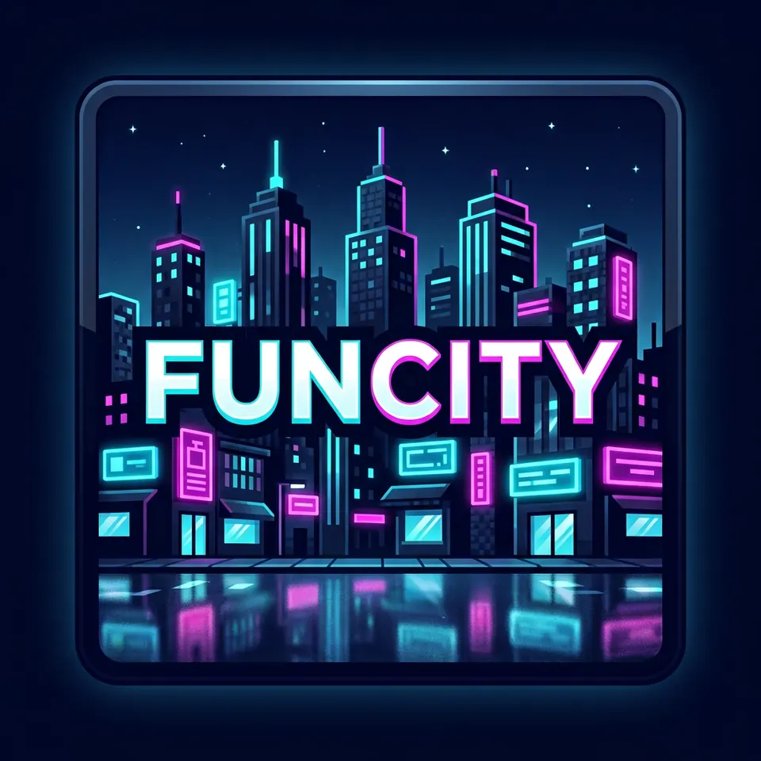

Libertate de construit
Orașul pornește de la zero. Jucătorii ridică străzi și locuri noi, fără protecții preventive de teren în ținta proiectului.
FunCity este proiectul unui oraș RP construit de jucători. Păstrăm mobilierul, vehiculele, armele, mâncarea și emotele din primul pack; joburile, rolurile și economia sunt planificate prin pluginuri. Dezvoltăm public și arătăm ce am testat cu adevărat.
Codul este public; un pachet Lite jucabil și un server public verificat încă nu sunt disponibile.

01 / Lumea
De ce să urmărești FunCity? Pentru conținut RP păstrat, un oraș construit împreună și decizii tehnice explicate fără promisiuni de FPS inventate.
Orașul pornește de la zero. Jucătorii ridică străzi și locuri noi, fără protecții preventive de teren în ținta proiectului.
Vehiculele, mobilierul, armele, mâncarea și emotele au fost păstrate în candidatul modat. Joburile și economia prin pluginuri rămân de implementat și probat.
Vocea de proximitate rămâne de rezolvat. CoreProtect s-a activat în laborator pentru jurnal și rollback admin, nu protecție preventivă; încă nu este testat pe lumea reală.
Inspirat din experiență
HYPECITY este reperul proprietarului pentru o comunitate mare. FunCity pornește de la pluginuri; motorul, clientul și capacitatea trebuie verificate pe instanța lor, nu deduse din sloturi sau dintr-un backup vechi.
02 / Clientul Lite
Profilul LowSpec existent are 21 de JAR-uri verificate pe disc, inclusiv conținutul RP restaurat. Setările inițiale sunt 5 chunkuri și maximum 2 GiB heap; nu pretindem încă FPS măsurat sau compatibilitate pe orice PC.
În profilul LowSpec au fost restaurate cele șase JAR-uri de conținut și dependențe care lipseau din primul pack. Nu există încă un download public Lite validat.
RoadRunner, FerriteCore și ModernFix au trecut un boot izolat pe server cu tot conținutul. Un câștig real de tick sau memorie trebuie demonstrat prin teste A/B.
Urmează conectarea client–server, autentificarea prin plugin, vocea, scenariile RP și backupul restaurat. Nu numim testul de pornire „server gata”.
03 / Stadiul real
Separăm o selecție făcută în repo de un server pe care poți intra. Fără contor fals de jucători, fără promisiuni de performanță.
FunCity b1.0827 este motorul de laborator. Clientul LowSpec are 21 JAR-uri, iar copia de server cu 15 JAR-uri de conținut/dependențe a pornit și s-a oprit curat. Vezi politica ↗
Copia cu 18 JAR-uri (15 de bază + 3 optimizări) a pornit/oprit pe PC. Nu am măsurat un câștig de performanță și nu am modificat serverul existent.
Licențele și drepturile JAR-urilor, conectarea Forge, autentificarea prin plugin, vocea, funcțiile RP, restaurarea backupului și testele cu jucători.
Construim cu răbdare
Codul și progresul sunt publice. Când clientul și serverul sunt probate împreună și drepturile de distribuire sunt confirmate, vom publica instrucțiunile de intrare.
Urmărește FunCity pe GitHub